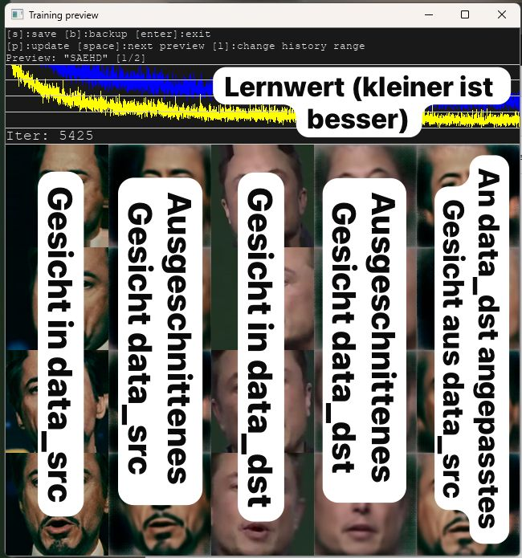

Das zweischneidige Schwert: KI zwischen Fortschritt und Desinformation
In einer Ära, in der Information als wichtigste globale Währung gilt, fungiert die Künstliche Intelligenz als zweischneidiges Schwert. Während sie in vielen Bereichen enorme Fortschritte ermöglicht, wird sie zunehmend effizienter eingesetzt, um die Grenzen zwischen Wahrheit und Fiktion systematisch zu verwischen. Die digitale Integrität gerät dabei durch verschiedene technologische Strategien massiv unter Druck.
Die Automatisierung der Täuschung
Der Einsatz von Large Language Models (LLMs) hat die Erstellung von Falschnachrichten revolutioniert. Was früher mühsame Handarbeit war, geschieht heute in Sekundenschnelle: KI generiert tausende Varianten einer Nachricht, um mittels Micro‑Targeting unterschiedliche Zielgruppen individuell anzusprechen. Dabei wird die Tendenz der KI zur „Halluzination“ – also das Erfinden von Fakten – gezielt missbraucht, um fiktive Belege und Zitate zu streuen. Ganze Netzwerke aus pseudojournalistischen Portalen, sogenannte „Pink Slime“-Websites, werden vollautomatisch mit diesen Inhalten geflutet, um Suchmaschinen‑Rankings zu manipulieren.
Verstärkt wird dieser Effekt durch KI‑gesteuerte Social‑Media‑Bots. Diese fungieren als digitale Multiplikatoren und simulieren durch koordinierte Interaktionen einen künstlichen Konsens. Da moderne Bots Sprachnuancen perfekt imitieren und zu unregelmäßigen Zeiten posten, sind sie von echten Nutzern kaum noch zu unterscheiden.
Liar’s Dividend
Diese Entwicklung führt zum sogenannten Liar’s Dividend. Weil heute jeder weiß, dass es Deepfakes gibt, verlieren digitale Beweise wie Videos oder Fotos an Glaubwürdigkeit. Das nutzen Personen der Öffentlichkeit aus: Wenn echte, aber belastende Aufnahmen von ihnen erscheinen, behaupten sie einfach, es handele sich um eine KI‑Fälschung. In dieser Atmosphäre des ständigen Zweifels entsteht eine paradoxe Situation: Lügen werden glaubwürdiger, während es für die Wahrheit immer schwieriger wird, überhaupt noch bewiesen zu werden.
Deepfakes
Die bei weitem gefährlichste Art der Verbreitung von Fehlinformationen sind die Deepfakes. Das sind mithilfe von Künstlicher Intelligenz manipulierte Videos, Bilder oder Audios, die echte Personen täuschend echt nachahmen. Sie können für Unterhaltung genutzt werden, bergen aber auch Risiken wie Desinformation oder Betrug. Der Face Swap ist die bei weitem bekannteste Art des Video‑ oder Foto‑Deepfakes. Der Prozess, ein Face Swap durchzuführen, etwa mit Software wie DeepFaceLab, folgt einer klaren Struktur: Nach der Extraktion der Gesichter aus Quell‑ und Zielvideo lernt die KI im Training, die Mimik des Originals auf das Ziel zu projizieren. In der abschließenden Konvertierung wird das neue Gesicht über das Original gelegt, wobei Masken‑Modifier wie „Erode“ oder „Blur“ genutzt werden, um harte Übergänge nahtlos zu verschmelzen.
Wie viel Material ist nötig?
Die Qualität einer Fälschung steht und fällt mit der Menge der zur Verfügung stehenden Daten. Während moderne „One‑Shot“ Modelle technisch bereits mit einem einzigen Foto ein Gesicht übertragen können, wirken diese Ergebnisse oft starr. Für einen professionellen Face‑Swap sind in der Regel zwischen 1.500 und 6.000 Einzelbilder der Zielperson nötig, um eine natürliche Mimik aus allen Winkeln zu garantieren.
Noch niedriger ist die Einstiegshürde bei Audio‑Deepfakes. Für ein einfaches Stimm‑Klonen reichen heute oft schon 3 bis 30 Sekunden einer sauberen Sprachaufnahme aus. Um jedoch eine wirklich flüssige, emotional glaubwürdige Stimme zu erzeugen, die von einer echten Person nicht mehr zu unterscheiden ist, wird meist Material von einer bis fünf Minuten Dauer verwendet.
Eigene Deepfake‑Versuche
Um die Theorie hinter der Desinformation besser zu verstehen und zu beschreiben, habe ich versucht, beim Testprojekt meine eigene Face‑Swap zu erstellen. Vorher habe ich noch nie praktische Erfahrungen in diesem Bereich, der Deepfakes, gesammelt. Dafür habe ich das Open‑Source‑Programm DeepFaceLab verwendet.
Trotz der mangelhaften Dokumentation von DeepFaceLab erleichterte mir ein kompaktes Tutorial den Einstieg. Es demonstrierte die grundlegenden Funktionen der Software sowie das integrierte Trainings‑Preset Quick96. Dieses Modell ermöglichte ein erstes Training der Gesichtsmerkmale bei einer Auflösung von 96×96 Pixeln.
Später arbeitete ich mich eigenständig in das komplexere SAEHD‑Preset ein. Damit gelang es mir, die Trainingsauflösung auf 128×128 Pixel zu steigern, was die Detailtiefe und Qualität der Ergebnisse im Vergleich zum Standardmodell spürbar verbesserte.
Für das tatsächliche „Deep Faken“ habe ich letztendlich zwei verschiedene Geräte mit folgender Hardware verwendet:
Setup 1:
Intel i9‑13900K @ 5500 MHz
NVIDIA RTX A2000 (12 GB)
32 GB DDR5 @ 6000 MHz CL30
Setup 2 (Legacy):
Intel i5‑6500 @ 3600 MHz
NVIDIA GeForce GTX 1080 (8 GB)
16 GB DDR4 @ 3200 MHz CL16
Unsere Deepfake‑Ergebnisse

Vorab ist eine Erklärung des Trainingsinterfaces notwendig: Das Programm greift auf zwei Videos zu, das erste ist data_src, welches das Quellvideo ist, also aus dem das Gesicht extrahiert werden soll. Das zweite Video ist data_dst, also das Zielvideo, in welches das Gesicht eingesetzt werden soll. Das Quellvideo muss mehrere tausend Male an data_dst angepasst werden, um ein möglichst gutes Endergebnis zu erzielen; das nennt man Iterationen.